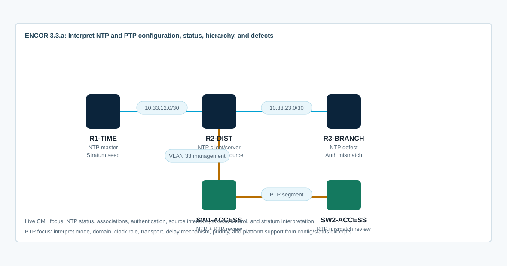

Overview
This lab targets ENCOR 3.3.a: interpret network time protocol configurations such as NTP and PTP. The CML topology gives you live NTP behavior to inspect, while the guide includes platform-style PTP configuration and status excerpts for interpretation because PTP support is hardware and platform dependent.
Your job is to explain what the configuration means, prove whether time synchronization is healthy, and identify why a device is not synchronizing. Do not stop at “the command is present.” Interpret stratum, source, authentication, access control, selected peer, PTP clock role, domain, transport, and delay mechanism.
Topology
R1-TIME is a lab NTP reference. R2-DIST syncs from R1 and serves downstream devices. R3-BRANCH and SW2-ACCESS include intentional NTP defects. SW1-ACCESS and SW2-ACCESS are also used for PTP interpretation scenarios.

Task 1: Baseline Clock and Time Source
Start by separating local clock state from network synchronization. A device can have a clock value and still not be synchronized to a valid source.
show clock detail
show ntp status
show ntp associations
show ntp associations detail
show running-config | include ^ntp|clock timezone|clock summer-time
show logging | include NTP|Clock|timeInterpret these fields:
- Clock is synchronized means the device selected a usable NTP source.
- Stratum is distance from the reference clock. Lower is closer, but not automatically better if policy blocks it.
- Reference ID identifies the selected source or reference.
- Offset, delay, and dispersion describe quality and stability of the association.
Task 2: Interpret the NTP Hierarchy
Map the intended time flow from configuration and status output. R1-TIME should be the upstream source, R2-DIST should select R1, and access/branch devices should select R2.
show running-config | section ntp
show access-lists NTP
show ip interface brief
show ip route 10.33.12.1
show ntp associations
show ntp status| Device | Expected Role | Key Interpretation | Risk to Notice |
|---|---|---|---|
| R1-TIME | Lab stratum source | ntp master, source interface, serve-only ACL | Lab master is not the same as a real GPS/atomic source. |
| R2-DIST | NTP client and downstream server | Unauthenticated upstream server to R1, LAN-facing service, serve-only ACL | If R2 is unsynced, every downstream client inherits bad time. |
| R3-BRANCH | NTP client with defect | Server points to R2, but the client requires authenticated replies | Reachability can work while NTP rejects updates. |
| SW1-ACCESS | NTP client | SVI source, default gateway, unauthenticated server | Source address and ACL must agree. |
| SW2-ACCESS | NTP client with defect | Server points to R2, but the client requires the wrong authenticated key | Wrong key ID or untrusted/auth-required behavior prevents sync. |
Task 3: Troubleshoot NTP Defects
Find and repair the defects using output first. Make a change only after you can explain which symptom proves the problem.
- R3-BRANCH can ping R2-DIST, but NTP does not synchronize because the client requires authenticated NTP while R2-DIST is serving unauthenticated NTP for this CML lab.
- SW2-ACCESS points to the right server, but requires authenticated NTP with the wrong key ID for this CML-compatible hierarchy.
- If a device shows reachability but no NTP association, check access groups, source interface, and routing back to the source address.
- If a device shows an association but is not synchronized, inspect reach, stratum, authentication, selected peer marker, and last event.
show ntp associations detail
show ntp status
show running-config | section ntp
clear ntp statistics
show access-lists NTP-CLIENTSExpected repair examples for this CML topology:
no ntp authenticate
no ntp trusted-key 20
no ntp authentication-key 20
no ntp server 10.33.23.1 key 20
ntp server 10.33.23.1 source Ethernet0/0For SW2-ACCESS, use the same idea with Vlan33 as the source and 10.33.33.1 as the server.
Troubleshooting note from live CML: On the IOL/IOL-L2 17.16 image used by this lab, enabling ntp authenticate globally on R2-DIST caused the upstream association to R1-TIME to show .AUTH., reach 0, and no synchronization. Removing authentication from the R1-to-R2 path produced a healthy association with inbound packets, nonzero reach, and R2 synchronized to R1. In production, authenticated NTP is valid when both sides support and agree on it; in this CML lab, keep the backbone time hierarchy unauthenticated and use the client-side authentication defects as interpretation practice.
Counter interpretation: If assoc out packets increases while assoc in packets remains zero, the client is transmitting but not receiving usable replies. That points toward the server, ACL/source behavior, return path, or authentication handling more than a simple local clock issue. If both counters increase and reach becomes nonzero, move on to stratum, selected peer marker, offset, and dispersion.
Command support: This image rejected debug ntp packets. Use show ntp associations detail, show ntp status, and clear ntp statistics, then wait for the next poll interval to compare counters.
Task 4: Interpret PTP Configuration and Status
PTP is platform dependent. If your IOL-L2 image does not support the PTP parser, use these realistic excerpts as the artifact to interpret. The exam topic is interpretation, so focus on what the commands imply operationally.
PTP Excerpt A
ptp mode e2etransparent
ptp domain 0
!
interface TenGigabitEthernet1/0/1
description Uplink to distribution
ptp enable
!
show ptp clock
PTP CLOCK INFO
Clock Type: End-to-End Transparent Clock
Domain: 0
Transport: Ethernet
Clock State: ForwardingInterpretation: this switch does not become the grandmaster. It measures residence time and updates correction fields so PTP endpoints can calculate more accurate time across the switching path.
PTP Excerpt B
ptp mode boundary
ptp domain 24
ptp priority1 128
ptp priority2 128
!
interface TenGigabitEthernet1/0/1
ptp enable
!
show ptp parent
Parent Clock: 00:00:00:00:00:00:00:00
Port State: Listening
Last Announce Received: neverInterpretation: the domain does not match Excerpt A. A domain mismatch can make PTP devices ignore each other even when Layer 2 forwarding works. A boundary clock can be a slave on one port and a master toward another segment after it selects a parent.
Task 5: Compare NTP and PTP Design Meaning
Answer these from the configuration and output, not from memorized definitions alone:
- Which devices are time sources, clients, and transit devices?
- Which NTP devices authenticate time, and which merely trust a reachable server?
- Which source interface or SVI address should upstream ACLs permit?
- Which PTP device is a transparent clock versus a boundary clock?
- Which PTP output proves the device has not selected a parent clock?
- Which protocol would you expect for sub-microsecond timing, and why is ordinary NTP not enough?
Depth check: NTP normally synchronizes routed IP devices well enough for logs, certificates, automation, and troubleshooting correlation. PTP is used where much tighter timing is required and depends on hardware timestamping, clock role, PTP domain, transport, and delay mechanism consistency.